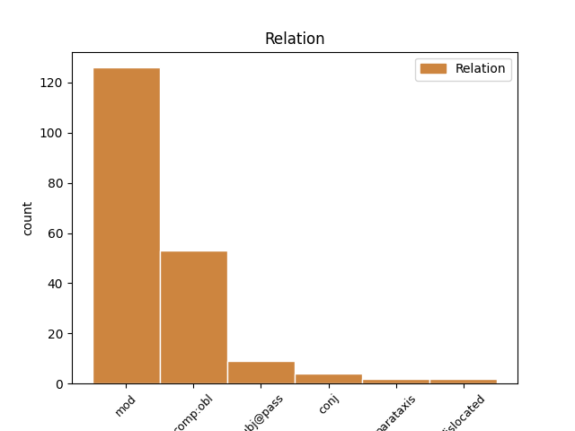
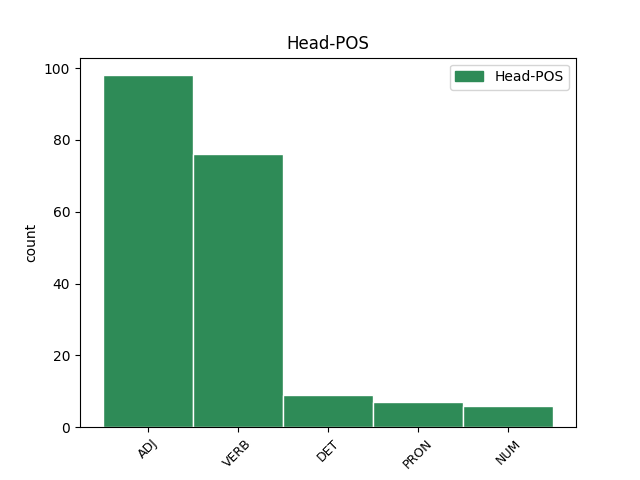
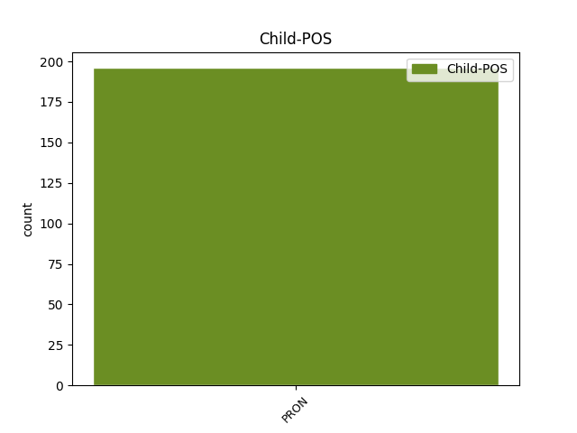

Distribution of features within this leaf



Agreement Rules sorted by frequency.
- When the dependent token is the modifer(mod) of the head token, and the dependent token is PRON.
1 و _ _ _ _ 0 _ _ _
2 قال _ _ _ _ 0 _ _ _
3 المتحدث _ _ _ _ 0 _ _ _
4 ب _ _ _ _ 0 _ _ _
5 اسم _ _ _ _ 0 _ _ _
6 المستشفى _ _ _ _ 0 _ _ _
7 أن _ _ _ _ 0 _ _ _
8 ه _ _ _ _ 0 _ _ _
9 منذ _ _ _ _ 0 _ _ _
10 التاسع _ _ _ _ 0 _ _ _
11 من _ _ _ _ 0 _ _ _
12 ابريل _ _ _ _ 0 _ _ _
13 و _ _ _ _ 0 _ _ _
14 عندما _ _ _ _ 0 _ _ _
15 أعلنت _ _ _ _ 0 _ _ _
16 الحكومة _ _ _ _ 0 _ _ _
17 تخصيص _ _ _ _ 0 _ _ _
18 هذا _ _ _ _ 0 _ _ _
19 المستشفي _ _ _ _ 0 _ _ _
20 ل _ _ _ _ 0 _ _ _
21 استقبال _ _ _ _ 0 _ _ _
22 مرضى _ _ _ _ 0 _ _ _
23 السارس _ _ _ _ 0 _ _ _
24 من _ _ _ _ 0 _ _ _
25 الاجانب _ _ _ _ 0 _ _ _
26 ف _ _ _ _ 0 _ _ _
27 إن _ _ _ _ 0 _ _ _
28 ه _ _ _ _ 0 _ _ _
29 قد _ _ _ _ 0 _ _ _
30 جرى _ _ _ _ 0 _ _ _
31 ادخال _ _ _ _ 0 _ _ _
32 ستة سِتَّة NUM QV----M-2I Case=Gen|Definite=Ind|Gender=Masc|NumForm=Word|NumValue=3 0 _ _ _
33 من _ _ _ _ 0 _ _ _
34 هؤلاء _ _ _ _ 0 _ _ _
35 الاجانب _ _ _ _ 0 _ _ _
36 و _ _ _ _ 0 _ _ _
37 هما هُوَ PRON SP---3MD1- Case=Nom|Gender=Masc|Number=Dual|Person=3|PronType=Prs 32 mod _ Gloss=he,it,she|LTranslit=huwa|Translit=humā|Vform=هُمَا
38 كنديان _ _ _ _ 0 _ _ _
39 و _ _ _ _ 0 _ _ _
40 أربعة _ _ _ _ 0 _ _ _
41 امريكيين _ _ _ _ 0 _ _ _
42 الى _ _ _ _ 0 _ _ _
43 المستشفى _ _ _ _ 0 _ _ _
44 ب _ _ _ _ 0 _ _ _
45 اعتبار _ _ _ _ 0 _ _ _
46 هم _ _ _ _ 0 _ _ _
47 من _ _ _ _ 0 _ _ _
48 الحالات _ _ _ _ 0 _ _ _
49 المشتبه _ _ _ _ 0 _ _ _
50 فى _ _ _ _ 0 _ _ _
51 إصابة _ _ _ _ 0 _ _ _
52 ها _ _ _ _ 0 _ _ _
53 ب _ _ _ _ 0 _ _ _
54 السارس _ _ _ _ 0 _ _ _
55 . _ _ _ _ 0 _ _ _
1 ذكر _ _ _ _ 0 _ _ _
2 بوش _ _ _ _ 0 _ _ _
3 خلال _ _ _ _ 0 _ _ _
4 مؤتمر _ _ _ _ 0 _ _ _
5 صحفى _ _ _ _ 0 _ _ _
6 مشترك _ _ _ _ 0 _ _ _
7 مع _ _ _ _ 0 _ _ _
8 جون _ _ _ _ 0 _ _ _
9 هوارد _ _ _ _ 0 _ _ _
10 رئيس _ _ _ _ 0 _ _ _
11 الوزراء _ _ _ _ 0 _ _ _
12 الاسترالى _ _ _ _ 0 _ _ _
13 الزائر _ _ _ _ 0 _ _ _
14 ب _ _ _ _ 0 _ _ _
15 مزرعة _ _ _ _ 0 _ _ _
16 ه _ _ _ _ 0 _ _ _
17 الخاصة _ _ _ _ 0 _ _ _
18 فى _ _ _ _ 0 _ _ _
19 كراوفورد _ _ _ _ 0 _ _ _
20 ب _ _ _ _ 0 _ _ _
21 ولاية _ _ _ _ 0 _ _ _
22 تكساس _ _ _ _ 0 _ _ _
23 أن _ _ _ _ 0 _ _ _
24 " _ _ _ _ 0 _ _ _
25 ( _ _ _ _ 0 _ _ _
26 الرئيس _ _ _ _ 0 _ _ _
27 العراقى _ _ _ _ 0 _ _ _
28 ) _ _ _ _ 0 _ _ _
29 صدام _ _ _ _ 0 _ _ _
30 حسين _ _ _ _ 0 _ _ _
31 كان _ _ _ _ 0 _ _ _
32 لدي _ _ _ _ 0 _ _ _
33 ه _ _ _ _ 0 _ _ _
34 أسلحة _ _ _ _ 0 _ _ _
35 دمار _ _ _ _ 0 _ _ _
36 شامل _ _ _ _ 0 _ _ _
37 . _ _ _ _ 0 _ _ _
38 " _ _ _ _ 0 _ _ _
39 و _ _ _ _ 0 _ _ _
40 أضاف _ _ _ _ 0 _ _ _
41 أن _ _ _ _ 0 _ _ _
42 " _ _ _ _ 0 _ _ _
43 العراق _ _ _ _ 0 _ _ _
44 ب _ _ _ _ 0 _ _ _
45 حجم _ _ _ _ 0 _ _ _
46 ولاية _ _ _ _ 0 _ _ _
47 كاليفورنيا _ _ _ _ 0 _ _ _
48 و _ _ _ _ 0 _ _ _
49 ب _ _ _ _ 0 _ _ _
50 ه _ _ _ _ 0 _ _ _
51 أنفاق _ _ _ _ 0 _ _ _
52 و _ _ _ _ 0 _ _ _
53 كهوف _ _ _ _ 0 _ _ _
54 و _ _ _ _ 0 _ _ _
55 كافة _ _ _ _ 0 _ _ _
56 أنواع _ _ _ _ 0 _ _ _
57 المجمعات _ _ _ _ 0 _ _ _
58 . _ _ _ _ 0 _ _ _
59 " _ _ _ _ 0 _ _ _
60 و _ _ _ _ 0 _ _ _
61 تعهد _ _ _ _ 0 _ _ _
62 بوش _ _ _ _ 0 _ _ _
63 ب _ _ _ _ 0 _ _ _
64 عثور _ _ _ _ 0 _ _ _
65 الولايات _ _ _ _ 0 _ _ _
66 المتحدة _ _ _ _ 0 _ _ _
67 على _ _ _ _ 0 _ _ _
68 الأسلحة _ _ _ _ 0 _ _ _
69 التى _ _ _ _ 0 _ _ _
70 قالت _ _ _ _ 0 _ _ _
71 بغداد _ _ _ _ 0 _ _ _
72 إن _ _ _ _ 0 _ _ _
73 ها _ _ _ _ 0 _ _ _
74 دمرت دَمَّر VERB VP-A-3FS-- Aspect=Perf|Gender=Fem|Number=Sing|Person=3|Voice=Act 0 _ _ _
75 ها هُوَ PRON SP---3FS4- Case=Acc|Gender=Fem|Number=Sing|Person=3|PronType=Prs 74 comp:obl _ Gloss=he,it,she|LTranslit=huwa|Translit=hā|Vform=هَا
76 التزاما _ _ _ _ 0 _ _ _
77 ب _ _ _ _ 0 _ _ _
78 مطالب _ _ _ _ 0 _ _ _
79 الأمم _ _ _ _ 0 _ _ _
80 المتحدة _ _ _ _ 0 _ _ _
81 ب _ _ _ _ 0 _ _ _
82 نزع _ _ _ _ 0 _ _ _
83 الأسلحة _ _ _ _ 0 _ _ _
84 . _ _ _ _ 0 _ _ _
85 و _ _ _ _ 0 _ _ _
86 قال _ _ _ _ 0 _ _ _
87 بوش _ _ _ _ 0 _ _ _
88 " _ _ _ _ 0 _ _ _
89 ما _ _ _ _ 0 _ _ _
90 هى _ _ _ _ 0 _ _ _
91 إلا _ _ _ _ 0 _ _ _
92 مسألة _ _ _ _ 0 _ _ _
93 وقت _ _ _ _ 0 _ _ _
94 أمام _ _ _ _ 0 _ _ _
95 نا _ _ _ _ 0 _ _ _
96 حتى _ _ _ _ 0 _ _ _
97 نقوم _ _ _ _ 0 _ _ _
98 ب _ _ _ _ 0 _ _ _
99 ذٰلك _ _ _ _ 0 _ _ _
100 . _ _ _ _ 0 _ _ _
101 " _ _ _ _ 0 _ _ _
102 و _ _ _ _ 0 _ _ _
103 كان _ _ _ _ 0 _ _ _
104 بوش _ _ _ _ 0 _ _ _
105 قد _ _ _ _ 0 _ _ _
106 اتهم _ _ _ _ 0 _ _ _
107 بغداد _ _ _ _ 0 _ _ _
108 مرارا _ _ _ _ 0 _ _ _
109 ب _ _ _ _ 0 _ _ _
110 تطوير _ _ _ _ 0 _ _ _
111 و _ _ _ _ 0 _ _ _
112 حيازة _ _ _ _ 0 _ _ _
113 أسلحة _ _ _ _ 0 _ _ _
114 دمار _ _ _ _ 0 _ _ _
115 شامل _ _ _ _ 0 _ _ _
116 و _ _ _ _ 0 _ _ _
117 استخدم _ _ _ _ 0 _ _ _
118 هذه _ _ _ _ 0 _ _ _
119 المزاعم _ _ _ _ 0 _ _ _
120 ك _ _ _ _ 0 _ _ _
121 ذريعة _ _ _ _ 0 _ _ _
122 ل _ _ _ _ 0 _ _ _
123 شن _ _ _ _ 0 _ _ _
124 الحرب _ _ _ _ 0 _ _ _
125 . _ _ _ _ 0 _ _ _
1 و _ _ _ _ 0 _ _ _
2 قال _ _ _ _ 0 _ _ _
3 ماجواير _ _ _ _ 0 _ _ _
4 الذى _ _ _ _ 0 _ _ _
5 كان _ _ _ _ 0 _ _ _
6 يسير _ _ _ _ 0 _ _ _
7 عبر _ _ _ _ 0 _ _ _
8 القرية _ _ _ _ 0 _ _ _
9 الهادئة _ _ _ _ 0 _ _ _
10 أن _ _ _ _ 0 _ _ _
11 ه هُوَ PRON SP---3MS4- Case=Acc|Gender=Masc|Number=Sing|Person=3|PronType=Prs 12 subj@pass _ Gloss=he,it,she|LTranslit=huwa|Translit=hu|Vform=هُ
12 أعجب أُعجِب VERB VP-P-3MS-- Aspect=Perf|Gender=Masc|Number=Sing|Person=3|Voice=Pass 0 _ _ _
13 ب _ _ _ _ 0 _ _ _
14 تعاون _ _ _ _ 0 _ _ _
15 القرويين _ _ _ _ 0 _ _ _
16 الجيد _ _ _ _ 0 _ _ _
17 مع _ _ _ _ 0 _ _ _
18 النظام _ _ _ _ 0 _ _ _
19 " _ _ _ _ 0 _ _ _
20 . _ _ _ _ 0 _ _ _
21 و _ _ _ _ 0 _ _ _
22 أضاف _ _ _ _ 0 _ _ _
23 " _ _ _ _ 0 _ _ _
24 إن _ _ _ _ 0 _ _ _
25 ها _ _ _ _ 0 _ _ _
26 المسئولية _ _ _ _ 0 _ _ _
27 الشخصية _ _ _ _ 0 _ _ _
28 التى _ _ _ _ 0 _ _ _
29 تجعل _ _ _ _ 0 _ _ _
30 النظام _ _ _ _ 0 _ _ _
31 يعمل _ _ _ _ 0 _ _ _
32 " _ _ _ _ 0 _ _ _
33 . _ _ _ _ 0 _ _ _
1 و _ _ _ _ 0 _ _ _
2 على _ _ _ _ 0 _ _ _
3 رغم _ _ _ _ 0 _ _ _
4 استبعاد _ _ _ _ 0 _ _ _
5 منح _ _ _ _ 0 _ _ _
6 " _ _ _ _ 0 _ _ _
7 الجماعة _ _ _ _ 0 _ _ _
8 الإسلامية _ _ _ _ 0 _ _ _
9 " _ _ _ _ 0 _ _ _
10 دورا _ _ _ _ 0 _ _ _
11 سياسياً _ _ _ _ 0 _ _ _
12 في _ _ _ _ 0 _ _ _
13 الفترة _ _ _ _ 0 _ _ _
14 القريبة _ _ _ _ 0 _ _ _
15 لكن _ _ _ _ 0 _ _ _
16 المراقبين _ _ _ _ 0 _ _ _
17 يربطون _ _ _ _ 0 _ _ _
18 بين _ _ _ _ 0 _ _ _
19 التطورات _ _ _ _ 0 _ _ _
20 الأخيرة _ _ _ _ 0 _ _ _
21 و _ _ _ _ 0 _ _ _
22 الإصلاحات _ _ _ _ 0 _ _ _
23 التي _ _ _ _ 0 _ _ _
24 أقر _ _ _ _ 0 _ _ _
25 ها _ _ _ _ 0 _ _ _
26 الحزب _ _ _ _ 0 _ _ _
27 الوطني _ _ _ _ 0 _ _ _
28 الحاكم _ _ _ _ 0 _ _ _
29 في _ _ _ _ 0 _ _ _
30 مؤتمر _ _ _ _ 0 _ _ _
31 ه _ _ _ _ 0 _ _ _
32 الأخير _ _ _ _ 0 _ _ _
33 ، _ _ _ _ 0 _ _ _
34 و _ _ _ _ 0 _ _ _
35 من _ _ _ _ 0 _ _ _
36 ها _ _ _ _ 0 _ _ _
37 منح _ _ _ _ 0 _ _ _
38 المعارضة _ _ _ _ 0 _ _ _
39 السياسية _ _ _ _ 0 _ _ _
40 و _ _ _ _ 0 _ _ _
41 الحزبية _ _ _ _ 0 _ _ _
42 و _ _ _ _ 0 _ _ _
43 المستقلة _ _ _ _ 0 _ _ _
44 مساحة _ _ _ _ 0 _ _ _
45 أكبر _ _ _ _ 0 _ _ _
46 من _ _ _ _ 0 _ _ _
47 حرية _ _ _ _ 0 _ _ _
48 التعبير _ _ _ _ 0 _ _ _
49 ، _ _ _ _ 0 _ _ _
50 لكن _ _ _ _ 0 _ _ _
51 ثمة _ _ _ _ 0 _ _ _
52 مؤشرات _ _ _ _ 0 _ _ _
53 إلى _ _ _ _ 0 _ _ _
54 أن _ _ _ _ 0 _ _ _
55 " _ _ _ _ 0 _ _ _
56 الإخوان _ _ _ _ 0 _ _ _
57 المسلمين _ _ _ _ 0 _ _ _
58 " _ _ _ _ 0 _ _ _
59 لن _ _ _ _ 0 _ _ _
60 تتمتع _ _ _ _ 0 _ _ _
61 ب _ _ _ _ 0 _ _ _
62 القدر _ _ _ _ 0 _ _ _
63 نفس _ _ _ _ 0 _ _ _
64 ه _ _ _ _ 0 _ _ _
65 من _ _ _ _ 0 _ _ _
66 الحرية _ _ _ _ 0 _ _ _
67 ، _ _ _ _ 0 _ _ _
68 و _ _ _ _ 0 _ _ _
69 هو هُوَ PRON SP---3MS1- Case=Nom|Gender=Masc|Number=Sing|Person=3|PronType=Prs 71 parataxis _ Gloss=he,it,she|LTranslit=huwa|Translit=huwa|Vform=هُوَ
70 ما _ _ _ _ 0 _ _ _
71 يستغرب اِستَغرَب VERB VIIA-3MS-- Aspect=Imp|Gender=Masc|Mood=Ind|Number=Sing|Person=3|VerbForm=Fin|Voice=Act 0 _ _ _
72 ه _ _ _ _ 0 _ _ _
73 قادة _ _ _ _ 0 _ _ _
74 الجماعة _ _ _ _ 0 _ _ _
75 أنفس _ _ _ _ 0 _ _ _
76 هم _ _ _ _ 0 _ _ _
77 إذ _ _ _ _ 0 _ _ _
78 اعتبر _ _ _ _ 0 _ _ _
79 مرشد _ _ _ _ 0 _ _ _
80 ها _ _ _ _ 0 _ _ _
81 مأمون _ _ _ _ 0 _ _ _
82 الهضيبي _ _ _ _ 0 _ _ _
83 أن _ _ _ _ 0 _ _ _
84 المؤتمر _ _ _ _ 0 _ _ _
85 الأخير _ _ _ _ 0 _ _ _
86 ل _ _ _ _ 0 _ _ _
87 الحزب _ _ _ _ 0 _ _ _
88 الوطني _ _ _ _ 0 _ _ _
89 " _ _ _ _ 0 _ _ _
90 على _ _ _ _ 0 _ _ _
91 رغم _ _ _ _ 0 _ _ _
92 كل _ _ _ _ 0 _ _ _
93 الدعاية _ _ _ _ 0 _ _ _
94 التي _ _ _ _ 0 _ _ _
95 أثيرت _ _ _ _ 0 _ _ _
96 حول _ _ _ _ 0 _ _ _
97 التغيير _ _ _ _ 0 _ _ _
98 و _ _ _ _ 0 _ _ _
99 الإصلاح _ _ _ _ 0 _ _ _
100 لم _ _ _ _ 0 _ _ _
101 يقدم _ _ _ _ 0 _ _ _
102 جديداً _ _ _ _ 0 _ _ _
103 ، _ _ _ _ 0 _ _ _
104 و _ _ _ _ 0 _ _ _
105 إنما _ _ _ _ 0 _ _ _
106 مجرد _ _ _ _ 0 _ _ _
107 دعوة _ _ _ _ 0 _ _ _
108 مكررة _ _ _ _ 0 _ _ _
109 سبق _ _ _ _ 0 _ _ _
110 أن _ _ _ _ 0 _ _ _
111 أعلن _ _ _ _ 0 _ _ _
112 ها _ _ _ _ 0 _ _ _
113 سابقاً _ _ _ _ 0 _ _ _
114 و _ _ _ _ 0 _ _ _
115 لم _ _ _ _ 0 _ _ _
116 ينفذ _ _ _ _ 0 _ _ _
117 من _ _ _ _ 0 _ _ _
118 ها _ _ _ _ 0 _ _ _
119 شيئاً _ _ _ _ 0 _ _ _
120 " _ _ _ _ 0 _ _ _
121 و _ _ _ _ 0 _ _ _
122 قال _ _ _ _ 0 _ _ _
123 إن _ _ _ _ 0 _ _ _
124 المؤتمر _ _ _ _ 0 _ _ _
125 " _ _ _ _ 0 _ _ _
126 انتهي _ _ _ _ 0 _ _ _
127 إلى _ _ _ _ 0 _ _ _
128 عموميات _ _ _ _ 0 _ _ _
129 غير _ _ _ _ 0 _ _ _
130 محددة _ _ _ _ 0 _ _ _
131 الملامح _ _ _ _ 0 _ _ _
132 و _ _ _ _ 0 _ _ _
133 الخطوات _ _ _ _ 0 _ _ _
134 " _ _ _ _ 0 _ _ _
135 و _ _ _ _ 0 _ _ _
136 لفت _ _ _ _ 0 _ _ _
137 إلى _ _ _ _ 0 _ _ _
138 أن _ _ _ _ 0 _ _ _
139 ه _ _ _ _ 0 _ _ _
140 " _ _ _ _ 0 _ _ _
141 لم _ _ _ _ 0 _ _ _
142 يتم _ _ _ _ 0 _ _ _
143 إعلان _ _ _ _ 0 _ _ _
144 أي _ _ _ _ 0 _ _ _
145 تعديلات _ _ _ _ 0 _ _ _
146 حقيقية _ _ _ _ 0 _ _ _
147 مخطط _ _ _ _ 0 _ _ _
148 إجراء _ _ _ _ 0 _ _ _
149 ها _ _ _ _ 0 _ _ _
150 " _ _ _ _ 0 _ _ _
151 . _ _ _ _ 0 _ _ _
1 ف _ _ _ _ 0 _ _ _
2 كلمة _ _ _ _ 0 _ _ _
3 ألقت _ _ _ _ 0 _ _ _
4 ها _ _ _ _ 0 _ _ _
5 ماريان _ _ _ _ 0 _ _ _
6 اديكسون _ _ _ _ 0 _ _ _
7 التي _ _ _ _ 0 _ _ _
8 قالت _ _ _ _ 0 _ _ _
9 : _ _ _ _ 0 _ _ _
10 " _ _ _ _ 0 _ _ _
11 ب _ _ _ _ 0 _ _ _
12 صفة _ _ _ _ 0 _ _ _
13 نا _ _ _ _ 0 _ _ _
14 نساء _ _ _ _ 0 _ _ _
15 ، _ _ _ _ 0 _ _ _
16 نعرف _ _ _ _ 0 _ _ _
17 أن _ _ _ _ 0 _ _ _
18 نا هُوَ PRON SP---1MP4- Case=Acc|Gender=Masc|Number=Plur|Person=1|PronType=Prs 19 dislocated _ Gloss=he,it,she|LTranslit=huwa|Translit=nā|Vform=نَا
19 يجب وَجَب VERB VIIA-3MS-- Aspect=Imp|Gender=Masc|Mood=Ind|Number=Sing|Person=3|VerbForm=Fin|Voice=Act 0 _ _ _
20 ان _ _ _ _ 0 _ _ _
21 نكون _ _ _ _ 0 _ _ _
22 مسؤولات _ _ _ _ 0 _ _ _
23 عن _ _ _ _ 0 _ _ _
24 حمل _ _ _ _ 0 _ _ _
25 رسالة _ _ _ _ 0 _ _ _
26 سلام _ _ _ _ 0 _ _ _
27 و _ _ _ _ 0 _ _ _
28 يمكن _ _ _ _ 0 _ _ _
29 نا _ _ _ _ 0 _ _ _
30 ان _ _ _ _ 0 _ _ _
31 نكون _ _ _ _ 0 _ _ _
32 افضل _ _ _ _ 0 _ _ _
33 من _ _ _ _ 0 _ _ _
34 الرجال _ _ _ _ 0 _ _ _
35 . _ _ _ _ 0 _ _ _
36 لقد _ _ _ _ 0 _ _ _
37 اجتمعنا _ _ _ _ 0 _ _ _
38 من _ _ _ _ 0 _ _ _
39 اجل _ _ _ _ 0 _ _ _
40 دعم _ _ _ _ 0 _ _ _
41 النساء _ _ _ _ 0 _ _ _
42 الفلسطينيات _ _ _ _ 0 _ _ _
43 و _ _ _ _ 0 _ _ _
44 الشعب _ _ _ _ 0 _ _ _
45 الفلسطيني _ _ _ _ 0 _ _ _
46 و _ _ _ _ 0 _ _ _
47 من _ _ _ _ 0 _ _ _
48 اجل _ _ _ _ 0 _ _ _
49 دعم _ _ _ _ 0 _ _ _
50 النساء _ _ _ _ 0 _ _ _
51 العراقيات _ _ _ _ 0 _ _ _
52 اللواتي _ _ _ _ 0 _ _ _
53 يقاومن _ _ _ _ 0 _ _ _
54 معاناة _ _ _ _ 0 _ _ _
55 الحصار _ _ _ _ 0 _ _ _
56 و _ _ _ _ 0 _ _ _
57 يترقبن _ _ _ _ 0 _ _ _
58 العدوان _ _ _ _ 0 _ _ _
59 ، _ _ _ _ 0 _ _ _
60 و _ _ _ _ 0 _ _ _
61 ل _ _ _ _ 0 _ _ _
62 التنديد _ _ _ _ 0 _ _ _
63 ب _ _ _ _ 0 _ _ _
64 شارون _ _ _ _ 0 _ _ _
65 و _ _ _ _ 0 _ _ _
66 حكومة _ _ _ _ 0 _ _ _
67 ه _ _ _ _ 0 _ _ _
68 و _ _ _ _ 0 _ _ _
69 حلفاء _ _ _ _ 0 _ _ _
70 ه _ _ _ _ 0 _ _ _
71 ، _ _ _ _ 0 _ _ _
72 و _ _ _ _ 0 _ _ _
73 ل _ _ _ _ 0 _ _ _
74 نفكر _ _ _ _ 0 _ _ _
75 في _ _ _ _ 0 _ _ _
76 نساء _ _ _ _ 0 _ _ _
77 افغانستان _ _ _ _ 0 _ _ _
78 اللواتي _ _ _ _ 0 _ _ _
79 حاولن _ _ _ _ 0 _ _ _
80 المشاركة _ _ _ _ 0 _ _ _
81 في _ _ _ _ 0 _ _ _
82 الحكم _ _ _ _ 0 _ _ _
83 و _ _ _ _ 0 _ _ _
84 الحكومة _ _ _ _ 0 _ _ _
85 و _ _ _ _ 0 _ _ _
86 طالبن _ _ _ _ 0 _ _ _
87 ب _ _ _ _ 0 _ _ _
88 السلام _ _ _ _ 0 _ _ _
89 ، _ _ _ _ 0 _ _ _
90 و _ _ _ _ 0 _ _ _
91 النساء _ _ _ _ 0 _ _ _
92 الاثيوبيات _ _ _ _ 0 _ _ _
93 اللواتي _ _ _ _ 0 _ _ _
94 يعانين _ _ _ _ 0 _ _ _
95 الجوع _ _ _ _ 0 _ _ _
96 ، _ _ _ _ 0 _ _ _
97 و _ _ _ _ 0 _ _ _
98 سوى _ _ _ _ 0 _ _ _
99 هن _ _ _ _ 0 _ _ _
100 الكثيرات _ _ _ _ 0 _ _ _
101 " _ _ _ _ 0 _ _ _
102 . _ _ _ _ 0 _ _ _
1 و _ _ _ _ 0 _ _ _
2 أضاف _ _ _ _ 0 _ _ _
3 " _ _ _ _ 0 _ _ _
4 العالم _ _ _ _ 0 _ _ _
5 يعرف _ _ _ _ 0 _ _ _
6 من _ _ _ _ 0 _ _ _
7 هو _ _ _ _ 0 _ _ _
8 المنزعج مُنزَعِج ADJ A-----MS1D Case=Nom|Definite=Def|Gender=Masc|Number=Sing 0 _ _ _
9 من _ _ _ _ 0 _ _ _
10 وقف _ _ _ _ 0 _ _ _
11 اطلاق _ _ _ _ 0 _ _ _
12 النار _ _ _ _ 0 _ _ _
13 في _ _ _ _ 0 _ _ _
14 كشمير _ _ _ _ 0 _ _ _
15 و _ _ _ _ 0 _ _ _
16 من _ _ _ _ 0 _ _ _
17 هو هُوَ PRON SP---3MS1- Case=Nom|Gender=Masc|Number=Sing|Person=3|PronType=Prs 8 conj _ Gloss=he,it,she|LTranslit=huwa|Translit=huwa|Vform=هُوَ
18 الذي _ _ _ _ 0 _ _ _
19 يضع _ _ _ _ 0 _ _ _
20 العراقيل _ _ _ _ 0 _ _ _
21 " _ _ _ _ 0 _ _ _
22 . _ _ _ _ 0 _ _ _
Disagree Examples:
1 و _ _ _ _ 0 _ _ _
2 أشار _ _ _ _ 0 _ _ _
3 مفاوض _ _ _ _ 0 _ _ _
4 تابع _ _ _ _ 0 _ _ _
5 ل _ _ _ _ 0 _ _ _
6 الأمم _ _ _ _ 0 _ _ _
7 المتحدة _ _ _ _ 0 _ _ _
8 الى _ _ _ _ 0 _ _ _
9 ان _ _ _ _ 0 _ _ _
10 كابيلا _ _ _ _ 0 _ _ _
11 لا _ _ _ _ 0 _ _ _
12 زال _ _ _ _ 0 _ _ _
13 يرفض _ _ _ _ 0 _ _ _
14 انتشار _ _ _ _ 0 _ _ _
15 قوات _ _ _ _ 0 _ _ _
16 الامم _ _ _ _ 0 _ _ _
17 المتحدة _ _ _ _ 0 _ _ _
18 على _ _ _ _ 0 _ _ _
19 المناطق _ _ _ _ 0 _ _ _
20 التي _ _ _ _ 0 _ _ _
21 تسيطر _ _ _ _ 0 _ _ _
22 علي _ _ _ _ 0 _ _ _
23 ها _ _ _ _ 0 _ _ _
24 قوات _ _ _ _ 0 _ _ _
25 ه _ _ _ _ 0 _ _ _
26 بل _ _ _ _ 0 _ _ _
27 يريد أَرَاد VERB VIIA-3MS-- Aspect=Imp|Gender=Masc|Mood=Ind|Number=Sing|Person=3|VerbForm=Fin|Voice=Act 0 _ _ _
28 ها هُوَ PRON SP---3FS4- Case=Acc|Gender=Fem|Number=Sing|Person=3|PronType=Prs 27 comp:obl _ Gloss=he,it,she|LTranslit=huwa|Translit=hā|Vform=هَا
29 ان _ _ _ _ 0 _ _ _
30 تنتشر _ _ _ _ 0 _ _ _
31 فقط _ _ _ _ 0 _ _ _
32 في _ _ _ _ 0 _ _ _
33 معاقل _ _ _ _ 0 _ _ _
34 المتمردين _ _ _ _ 0 _ _ _
35 . _ _ _ _ 0 _ _ _
1 و _ _ _ _ 0 _ _ _
2 شارك _ _ _ _ 0 _ _ _
3 في _ _ _ _ 0 _ _ _
4 القمة _ _ _ _ 0 _ _ _
5 كابيلا _ _ _ _ 0 _ _ _
6 و _ _ _ _ 0 _ _ _
7 حلفاء _ _ _ _ 0 _ _ _
8 ه _ _ _ _ 0 _ _ _
9 رئيس _ _ _ _ 0 _ _ _
10 زيمبابوي _ _ _ _ 0 _ _ _
11 روبرت _ _ _ _ 0 _ _ _
12 موغاي _ _ _ _ 0 _ _ _
13 و _ _ _ _ 0 _ _ _
14 ناميبيا _ _ _ _ 0 _ _ _
15 سام _ _ _ _ 0 _ _ _
16 نوجوما _ _ _ _ 0 _ _ _
17 و _ _ _ _ 0 _ _ _
18 أنغولا _ _ _ _ 0 _ _ _
19 الممثلة _ _ _ _ 0 _ _ _
20 على _ _ _ _ 0 _ _ _
21 مستوى _ _ _ _ 0 _ _ _
22 وزير _ _ _ _ 0 _ _ _
23 ، _ _ _ _ 0 _ _ _
24 ب _ _ _ _ 0 _ _ _
25 الإضافة _ _ _ _ 0 _ _ _
26 الى _ _ _ _ 0 _ _ _
27 الفصائل _ _ _ _ 0 _ _ _
28 المتمردة _ _ _ _ 0 _ _ _
29 الثلاث _ _ _ _ 0 _ _ _
30 و _ _ _ _ 0 _ _ _
31 حلفاء حَلِيف ADJ A-----MP2R Case=Gen|Definite=Cons|Gender=Masc|Number=Plur 0 _ _ _
32 ها هُوَ PRON SP---3FS2- Case=Gen|Gender=Fem|Number=Sing|Person=3|PronType=Prs 31 mod _ Gloss=he,it,she|LTranslit=huwa|Translit=hā|Vform=هَا
33 رئيس _ _ _ _ 0 _ _ _
34 رواندا _ _ _ _ 0 _ _ _
35 بول _ _ _ _ 0 _ _ _
36 كاغامي _ _ _ _ 0 _ _ _
37 و _ _ _ _ 0 _ _ _
38 أوغندا _ _ _ _ 0 _ _ _
39 يوراي _ _ _ _ 0 _ _ _
40 يوسيفيني _ _ _ _ 0 _ _ _
41 . _ _ _ _ 0 _ _ _
1 و _ _ _ _ 0 _ _ _
2 قال _ _ _ _ 0 _ _ _
3 باقري _ _ _ _ 0 _ _ _
4 ان _ _ _ _ 0 _ _ _
5 من _ _ _ _ 0 _ _ _
6 الاسباب _ _ _ _ 0 _ _ _
7 الرئيسية _ _ _ _ 0 _ _ _
8 التي _ _ _ _ 0 _ _ _
9 جعلت جَعَل VERB VP-A-3FS-- Aspect=Perf|Gender=Fem|Number=Sing|Person=3|Voice=Act 0 _ _ _
10 ه هُوَ PRON SP---3MS4- Case=Acc|Gender=Masc|Number=Sing|Person=3|PronType=Prs 9 comp:obl _ Gloss=he,it,she|LTranslit=huwa|Translit=hu|Vform=هُ
11 يترك _ _ _ _ 0 _ _ _
12 المانيا _ _ _ _ 0 _ _ _
13 " _ _ _ _ 0 _ _ _
14 عدم _ _ _ _ 0 _ _ _
15 تأقلم _ _ _ _ 0 _ _ _
16 زوجة _ _ _ _ 0 _ _ _
17 ي _ _ _ _ 0 _ _ _
18 على _ _ _ _ 0 _ _ _
19 الحياة _ _ _ _ 0 _ _ _
20 في _ _ _ _ 0 _ _ _
21 المانيا _ _ _ _ 0 _ _ _
22 و _ _ _ _ 0 _ _ _
23 إصرار _ _ _ _ 0 _ _ _
24 ها _ _ _ _ 0 _ _ _
25 على _ _ _ _ 0 _ _ _
26 العودة _ _ _ _ 0 _ _ _
27 الى _ _ _ _ 0 _ _ _
28 ايران _ _ _ _ 0 _ _ _
29 " _ _ _ _ 0 _ _ _
30 . _ _ _ _ 0 _ _ _
1 و _ _ _ _ 0 _ _ _
2 طالب _ _ _ _ 0 _ _ _
3 الفلسطينيون _ _ _ _ 0 _ _ _
4 في _ _ _ _ 0 _ _ _
5 المقابل _ _ _ _ 0 _ _ _
6 ب _ _ _ _ 0 _ _ _
7 السيادة _ _ _ _ 0 _ _ _
8 على _ _ _ _ 0 _ _ _
9 القدس _ _ _ _ 0 _ _ _
10 الشرقية _ _ _ _ 0 _ _ _
11 ب _ _ _ _ 0 _ _ _
12 كامل كَامِل ADJ A-----MS2R Case=Gen|Definite=Cons|Gender=Masc|Number=Sing 0 _ _ _
13 ها هُوَ PRON SP---3FS2- Case=Gen|Gender=Fem|Number=Sing|Person=3|PronType=Prs 12 mod _ Gloss=he,it,she|LTranslit=huwa|Translit=hā|Vform=هَا
14 . _ _ _ _ 0 _ _ _
1 السعودية _ _ _ _ 0 _ _ _
2 / _ _ _ _ 0 _ _ _
3 العراق _ _ _ _ 0 _ _ _
4 - _ _ _ _ 0 _ _ _
5 دعت _ _ _ _ 0 _ _ _
6 الصحف _ _ _ _ 0 _ _ _
7 السعودية _ _ _ _ 0 _ _ _
8 الصادرة _ _ _ _ 0 _ _ _
9 اليوم _ _ _ _ 0 _ _ _
10 الى _ _ _ _ 0 _ _ _
11 الاطاحة _ _ _ _ 0 _ _ _
12 ب _ _ _ _ 0 _ _ _
13 الرئيس _ _ _ _ 0 _ _ _
14 العراقي _ _ _ _ 0 _ _ _
15 صدام _ _ _ _ 0 _ _ _
16 حسين _ _ _ _ 0 _ _ _
17 في _ _ _ _ 0 _ _ _
18 اعقاب _ _ _ _ 0 _ _ _
19 الانتقادات _ _ _ _ 0 _ _ _
20 الحادة _ _ _ _ 0 _ _ _
21 اللهجة _ _ _ _ 0 _ _ _
22 التي _ _ _ _ 0 _ _ _
23 وجه وَجَّه VERB VP-A-3MS-- Aspect=Perf|Gender=Masc|Number=Sing|Person=3|Voice=Act 0 _ _ _
24 ها هُوَ PRON SP---3FS4- Case=Acc|Gender=Fem|Number=Sing|Person=3|PronType=Prs 23 comp:obl _ Gloss=he,it,she|LTranslit=huwa|Translit=hā|Vform=هَا
25 الى _ _ _ _ 0 _ _ _
26 السعودية _ _ _ _ 0 _ _ _
27 و _ _ _ _ 0 _ _ _
28 الكويت _ _ _ _ 0 _ _ _
29 متهما _ _ _ _ 0 _ _ _
30 إيا _ _ _ _ 0 _ _ _
31 هما _ _ _ _ 0 _ _ _
32 ب _ _ _ _ 0 _ _ _
33 السعي _ _ _ _ 0 _ _ _
34 الى _ _ _ _ 0 _ _ _
35 ابقاء _ _ _ _ 0 _ _ _
36 الحظر _ _ _ _ 0 _ _ _
37 مفروضا _ _ _ _ 0 _ _ _
38 على _ _ _ _ 0 _ _ _
39 العراق _ _ _ _ 0 _ _ _
40 . _ _ _ _ 0 _ _ _